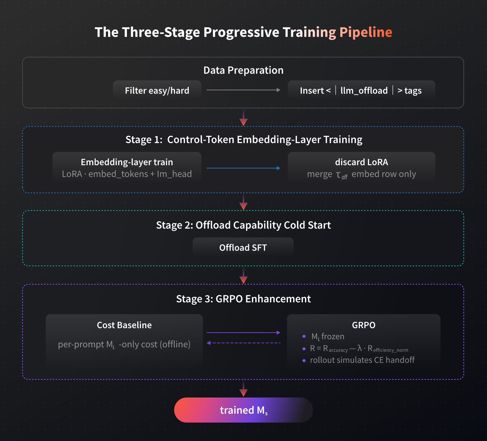
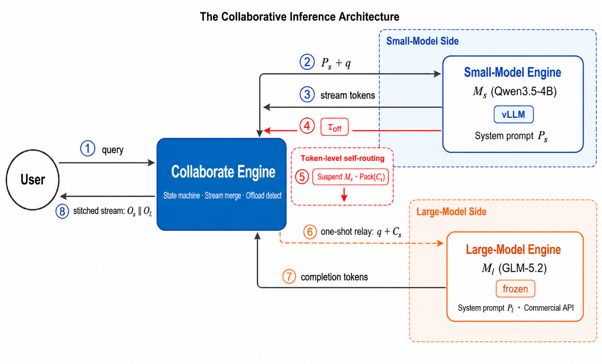
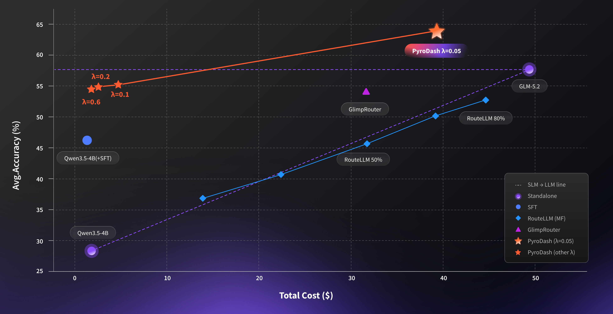

Control-token embedding
LoRA on embed_tokens + lm_head, then keep only the <|llm_offload|> embedding row so SLM can express offload intent.
PyroDash
Token-level offload with <|llm_offload|>. Near-LLM performance with fractional LLM-only inference cost.
How it works
No external router. No LLM retraining. Progressive training teaches SLM when to emit <|llm_offload|>; at inference, the Collaborate Engine suspends, relays, and concatenate streams.
Data preparation filters easy/hard samples and inserts control tags <|llm_offload|>. Then embed <|llm_offload|>, cold-start offload SFT, and GRPO with a cost-aware reward.
LoRA on embed_tokens + lm_head, then keep only the <|llm_offload|> embedding row so SLM can express offload intent.
Offload SFT teaches when and how to emit <|llm_offload|> on hard steps while keeping easy steps local.
With LLM frozen, optimize R = R_accuracy − λ · R_efficiency so performance and LLM-only cost move together.

SLM (Qwen3.5-4B / vLLM) streams until <|llm_offload|>. The Collaborate Engine packs context of SLM (Cs), one-shot relays to frozen LLM (GLM-5.2), then returns the concatenated stream of SLM and LLM.
Offload detect · stream concatenate — one-shot concatenate streams.
Upon <|llm_offload|>: suspend SLM, Pack(Cs), then one-shot relay query + Cs to the LLM API.
Users always get continuous answers: SLM prefix plus LLM completion.

Results
On five math benchmarks (Minerva, GSM8K, Olympiad, AIME25, AIME24), PyroDash with Qwen3.5-4B + GLM-5.2 breaks the conventional trade-off barrier.
64.04%
Avg. accuracy PyroDash (λ=0.05) — outperform GLM-5.2 (LLM-only)
96.4%
Cost reduction PyroDash (λ=0.6) vs. GLM-5.2 (LLM-only)
1.90%
LLM token ratio at λ=0.6

| Method | Avg. Acc. (%) | LLM Token Ratio (%) | Avg. LLM Calls | Cost ($) |
|---|---|---|---|---|
| Qwen3.5-4B | 28.36 | 0.00 | 0.000 | 2.26 |
| Qwen3.5-4B (+SFT) | 46.25 | 0.00 | 0.000 | 1.32 |
| RouteLLM (~75% GLM-5.2-FP8) | 52.74 | 77.37 | 0.808 | 44.62 |
| GlimpRouter (τ=0.9) | 54.20 | 75.11 | 1.20 | 31.61 |
| PyroDash (λ=0.1) | 55.29 | 8.19 | 0.058 | 4.71 |
| PyroDash (λ=0.6) | 54.55 | 1.90 | 0.012 | 1.78 |
| PyroDash (λ=0.05) | 64.04 | 95.34 | 0.975 | 39.29 |
| GLM-5.2-FP8 | 57.68 | 100.00 | 1.000 | 49.36 |
Case study
Same problem: Once the Collaborate Engine detects the <|llm_offload|>, LLM relay starts.
Resources
@misc{pyrodash2026,
title = {PyroDash: Cost-Efficient Token-Level Small-Large Model Collaborative Inference},
author = {{PyroMind Dynamics}},
year = {2026},
note = {Preprint}
}